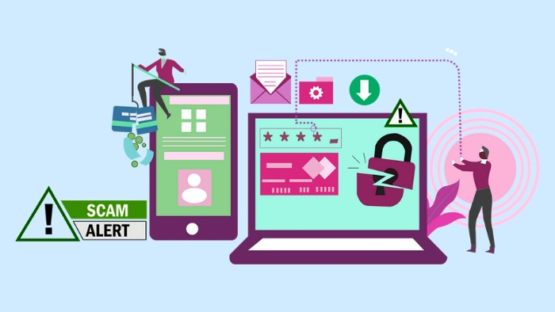
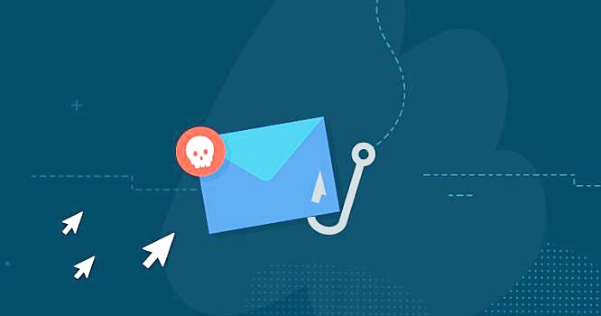

Phishing emails are emails that appear to come from a legitimate source, such as your bank or credit card company, informing you that your account has been compromised and you must take action to prevent your account from being shut down. The email includes a link to a website that looks just like the real website. In fact, it is the real website, but the link will take you to a fake website that looks just like the real website, but asks that you enter your username and password. This will steal your identity, and hackers will access your account. Before you open a link in an email, check the website’s URL address to see if it is the real website.Phish Protection is more effective at protecting a company against zero-day attacks because they tend to provide the data which they discover back to authorities in real time.
Unfortunately, cybercriminals are increasingly clever. They're also making use of more sophisticated masking techniques, making it extremely difficult for people without effective anti-spam filters to distinguish between legitimate and illegitimate messages. Take your time to inspect any suspicious links that may be attached to a phishing attempt, as this strategy may compromise your data and personal information. Here's how to proceed.

It is not easy for you to achieve this, but the more calm you are, the more rationally and practically you can act. Remember that merely opening a phishing email is not going to risk you. If you opened the email but didn't click on any links or download any attachments, the probability of the criminals behind the attack to have access to your information is minimal. If this occurs, then send a message to the sender's previous email address within the body of your message and mark it as junk.
However, if you did simply click on a malicious link in the email, this step is paramount. Deactivating your Internet connection will prevent the perpetrators of the cyber attack from gaining access to private and confidential information. It is possible to do this by disconnecting your Wi-Fi or ethernet cable.
Clicking on a suspected phishing link frequently involves the opening of malicious files or folders. Take the time to inspect downloads in that folder to see if an attachment was downloaded to your computer, but don't open it. If you can't, delete the attachment without opening it.
Even if you're extraordinarily careful, malware can still infect the gadget. A good antivirus program is essential to stop the virus or malware. Your device will swiftly look over for threats if you configure a strong anti-virus program.
It 's important to confirm that emails from your site are legitimate to prevent future phishing attempts. Otherwise, your email provider may be in a position to recognize and filter out future spam emails.

You should thoroughly update your login credentials if you entered personal information as a part of a phishing attack to move any funds from the hackers. The attackers who sent the email may have access to your login information, which may allow them to break into other websites and accounts.
After you've handled the problem, you may have a tendency to overlook your cyber security. Nevertheless, it's more important than ever to take precautions to defend yourself and your data from potential phishing attempts. Buying and using an anti-spam filter for your server will help to prevent malicious emails from reaching your inbox, as you're making an attempt to restrict their access.
In conclusion, Phishing emails are getting more and more realistic. Scammers are becoming more creative and using tactics to learn who opened their emails and for how long. This is why you should never click on a link in Phishing emails. Instead, hover over the links in your emails and check out the URL before clicking.